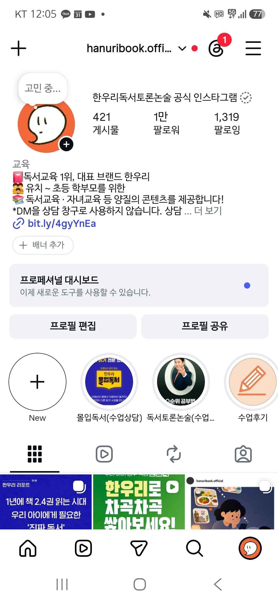
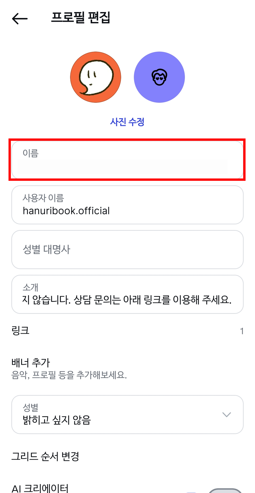
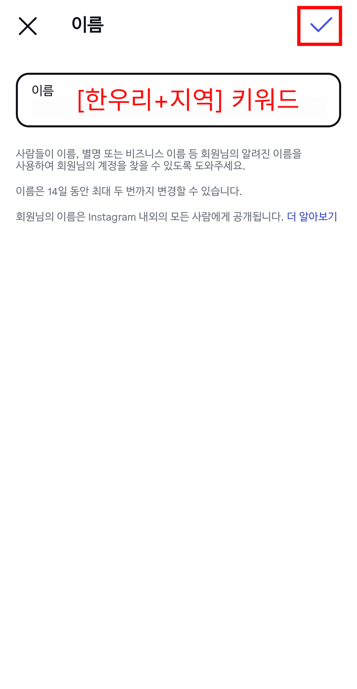
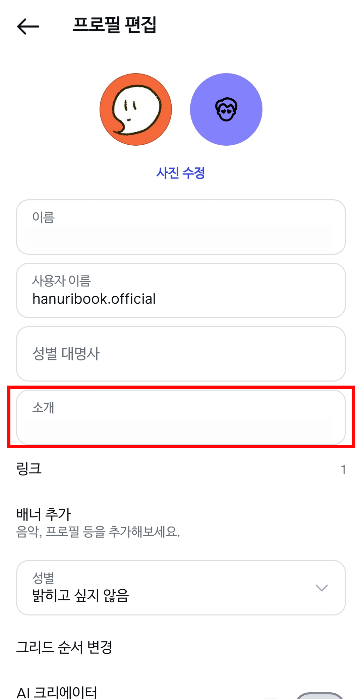
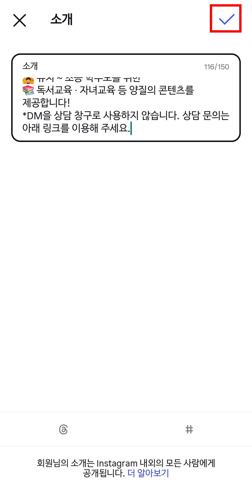

01
이름 설정하기
세팅 경로
프로필
→
프로필 편집
→
이름
→
수정 후 완료



학부모님이 '한우리'임을 알 수 있도록, 이름은 [한우리+지역명] 키워드로 조합하여 작성하세요.
예시: 한우리독서논술 화성지점 / 한우리독서논술 화성독서교실
예시: 한우리독서논술 화성지점 / 한우리독서논술 화성독서교실
02
소개말(자기소개) 작성하기
세팅 경로
프로필
→
프로필 편집
→
소개
→
수정 후 완료



소개말에 간단히 적어주세요!
- 1이름: 한우리+지역 키워드로 작성
- 2선생님 소개: 선생님 경력, 교육 철학 등
- 3교실 주소
- 4⭐ 상담 창구: 전화번호 / 오픈 채팅방 / DM 등
03
SNS(블로그·네이버플레이스) 연결하기
세팅 경로
프로필
→
프로필 편집
→
링크
→
링크 추가
→
URL 입력
네이버 블로그, 네이버플레이스는 꼭 연결해주세요.
04
하이라이트 설정
세팅 경로
+(NEW) 누르기
→
스토리 선택
→
하이라이트 제목 작성
→
완료
❓ 자주 묻는 질문
Q1. 하이라이트 화면이 달라요!
하이라이트 설정이 처음이신 분들은 아래 경로로 설정해보세요!
+ 누르기
→
주요 특징
→
선택 후 위 가이드대로 진행
Q2. 게시물은 올려봤는데, 스토리는 안 올려봐서 하이라이트에 넣을 게 없어요!
기존 게시물을 스토리로 올린 후에 하이라이트로 만들어보세요!
비행기 모양
→
스토리에 추가
→
내 스토리
→
Q1 가이드대로 진행
Q3. 고정 게시물은 어떻게 설정하나요?
점 3개 (⋯)
→
기본 그리드에 고정